THE TREE · T7 — the podium standing up in 3D, ★ FAVORITES and ♥ LIKED as podiums
2 Oct 2026, evening · built on the live Hub page tree-map (branch hub/t7-podium-3d-20261002, not deployed) · every picture below is a real headless browser shot of the branch at 1680 wide on a Retina scale (2), examined by eye · numbers tagged [MEASURED] come from the recorded walk (deliverables/20260929/tree-map/shots/t7-proof.json)
1 · THE PICTURES FIRST
1.1 The podium for Technology (113 names) — this afternoon, flat → this evening, standing up
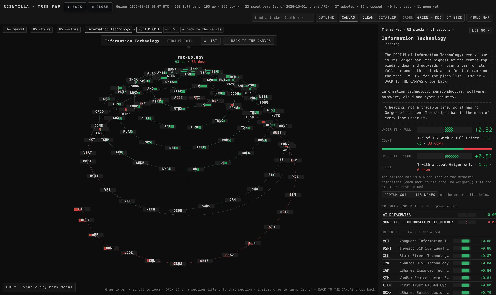
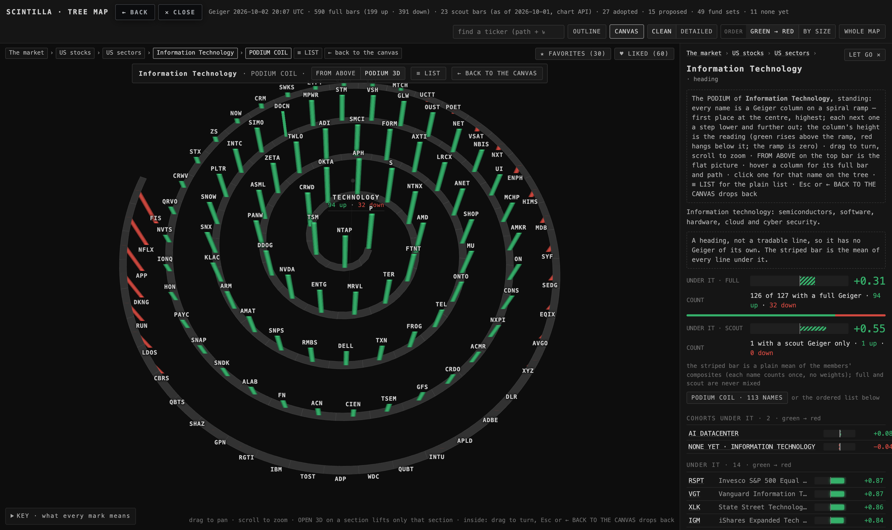
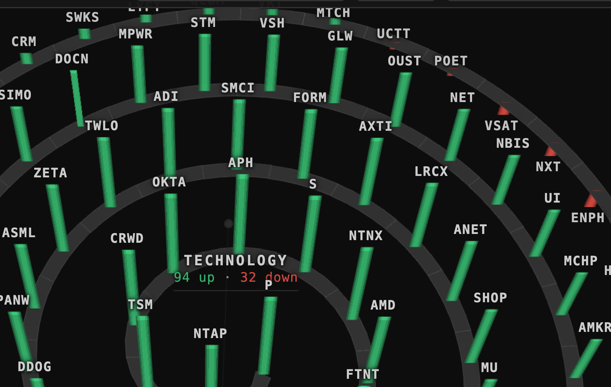
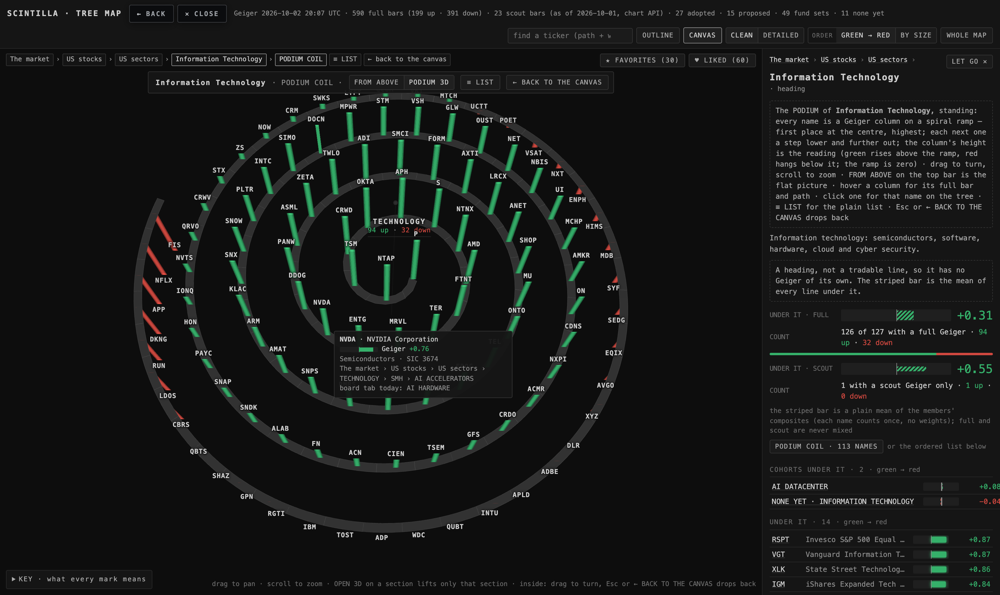
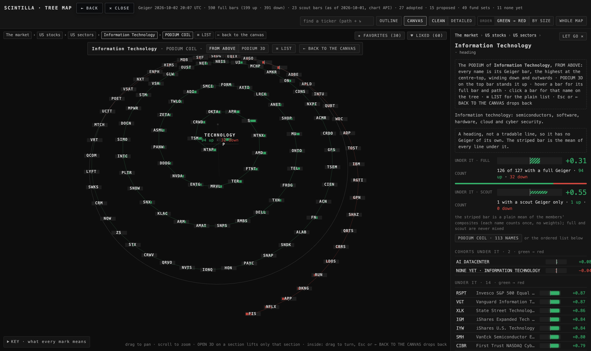
1.2 ★ FAVORITES and ♥ LIKED — the Hub's own lists as podiums
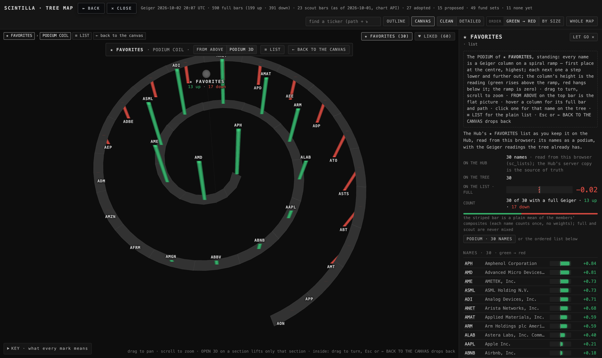
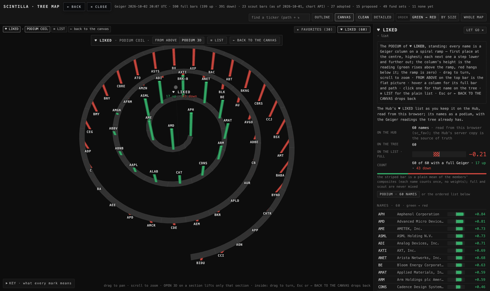
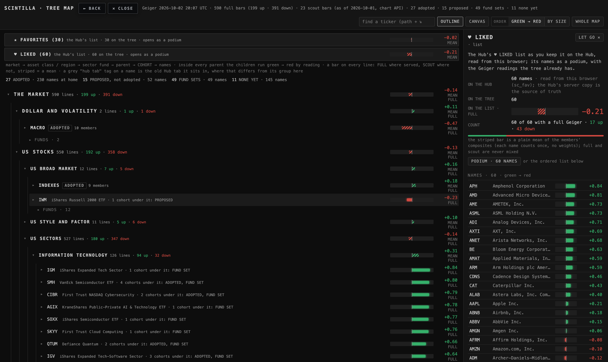
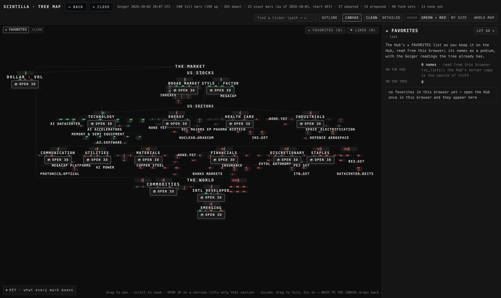
1.3 On a phone
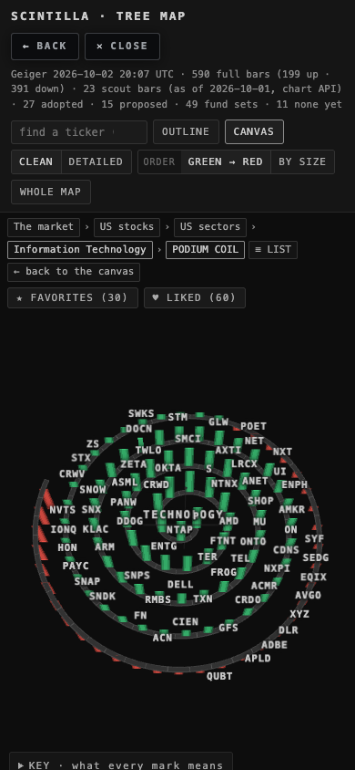
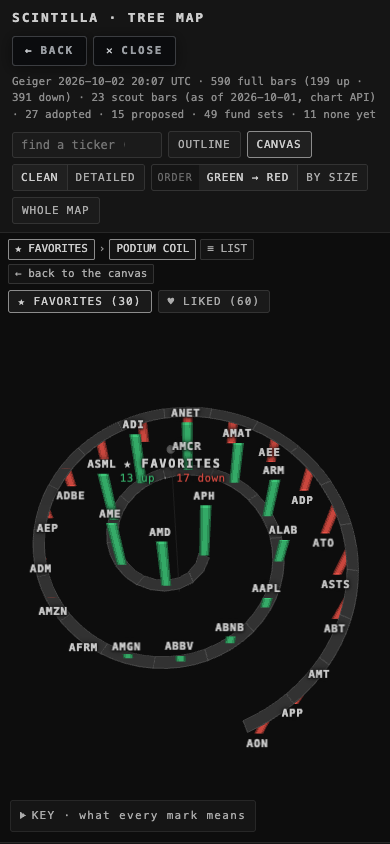
2 · WHAT CHANGED, IN WORDS
- The podium stands up. Inside the PODIUM COIL the top bar has a switch, FROM ABOVE | PODIUM 3D, and PODIUM 3D is what opens. Every name is a column standing on a spiral ramp: its place along the spiral is its rank (an even step, so the columns never bunch), the ramp sinks a fixed amount per turn (a helix, so every place sits a little lower than the one before), and the column's length is the reading — green up from the ramp, red down from it. The ramp is drawn as a stepped ribbon, one tread per place. The ticker sits just past the tip of its column (above a green one, below a red one), drawn flat to the screen so it reads from any angle; hover gives the full bar and the path, a click the card and the tree. Turning, zooming, Esc and ← BACK TO THE CANVAS are the section 3D view's own controls — the same module (map3d.js), no second 3D library.
- No two bars touch. This afternoon's spiral had its turns 63 units apart while a bar was 54 px wide at that zoom, so 62 pairs touched in the middle turns. Each picture now has its own spacing, found by measuring: the walk re-enters the podium with a setting and counts the touching pairs on screen, over 180 settings for the standing picture and 96 for the flat one. The standing podium uses a camera 70° up, turns 145 units apart, 96 units between places, one turn 16 lower: 0 of 113 touch, all 113 tickers printed. From above: a camera 66° up (was 42°), turns 214 apart, 112 between bars, the bar 44 × 11 px: 0 of 113 touch, 112 tickers printed. Lower cameras were tried (30°–62° standing, 42°–60° from above) and always left touching pairs — a column's height on screen has to stay shorter than the distance between one turn and the next, and only a high camera and a wide pitch give that. The cost: at 70° a column shows a third of its length; drag to tilt the podium lower when you want the heights big (then columns in front will cover ones behind).
- ★ FAVORITES and ♥ LIKED as podiums. Two entries at the top of the tree — chips at the top-right of the canvas, the first two rows of the OUTLINE — each opening straight as a podium with the Geiger readings the tree already has. Where the lists come from: the Hub keeps both on the server (Supabase — station_lists holds FAVORITES and RADAR, hub_favorites holds LIKED) and mirrors them into the browser on every read: sc_lists = {favorites, radar} and sc_fav = the LIKED tickers. The tree page is served from scintillahub.ai like the Hub, so it reads that mirror directly: no export, no new feed, nothing written, no key copied. The counts refresh when the Hub changes a list in another tab. A ticker on your list that the tree does not serve is counted and named on the card, not drawn. An empty list shows its one-line note and never opens a podium of nothing.
3 · WHERE EACH NUMBER COMES FROM
| number | value | how it was measured |
|---|---|---|
| Technology standing (PODIUM 3D) | 113 columns · 81 up · 32 down · P +0.92 at the centre, tip 239 above the top step · FIS −0.95 at radius 706, its tip 317 below the top step · the ramp 0 → −71.5 | the walk reads every place's rank, reading, radius, ramp height and tip and checks four orders along the spiral: reading falls, radius grows, ramp falls, tips fall [MEASURED] |
| touching pairs, standing | 0 of 113 at 1680 × 1000, device scale 2 (T6, flat: 62) | every column's screen rectangle (foot to tip, 10 px wide) against every other [MEASURED] |
| touching pairs, from above | 0 of 113 (was 62) · bars 44 × 11 px | the same test on the flat bars' rectangles [MEASURED] |
| tickers printed | standing 113 of 113 · from above 112 of 113 (T6: 101) | the walk counts the labels on the screen; the parent's name is the 114th [MEASURED] |
| the lists | FAVORITES 30 planted → 30 read, 30 on the tree, 1 touching pair (ANET / AMCR) · LIKED 60 → 60, 1 pair (AXTI / BRK-B) | planted under the Hub's keys before the page loads; the walk opens each from its entry and measures [MEASURED] |
| the spiral on the screen | 803 × 734 px of a 1280 × 918 canvas (standing) · 802 × 745 (from above) | the box round every bar's rectangle [MEASURED] |
| the phone (390) | Technology: 70 of 113 tickers, 3 pairs touch · FAVORITES: 28 of 30, 3 pairs | the same walk at 390 × 844, scale 1 [MEASURED] |
| Esc, hover, click | Esc drops out of both list podiums (area → none) · hover NVDA: "Geiger +0.76 · Semiconductors · SIC 3674 · the path" · click NVDA: the card, out of the podium | real key and mouse events in the headless browser [MEASURED] |
| settings tried | standing 180 (camera 30°–74°, pitch, step, drop) → 19 with 0 touching, lowest camera 70° · from above 96 (42°–72°) → 9 with 0, lowest 66° | __mm.podiumTune in the headless page, each setting re-entered and counted [MEASURED] |
| tests | before: 1719 tests · 1712 pass · the 5 known failures → after: 1723 tests · the same 5 known failures · 4 new T7 tests green · the T6 and canvas anchors brought to the T7 truth | node --test tests/ on the branch, before and after [MEASURED] |
4 · WHAT COULD BE WRONG
- The camera is high. 70° up is what the "no two bars touch" rule forces for 113 names; at that angle a column shows a third of its length, so the podium reads more as a spiral with coloured pins than as a skyline. Drag to tilt and the heights grow — at the price of columns covering each other. Decision 1 below.
- The ramp's drop is gentle (16 units per turn, 71 over the whole spiral; the top column alone is 239). The heights do the talking, as you said; a steeper staircase would separate the turns but costs touching pairs at any camera below 70°. Decision 3.
- The lists are read from the Hub's browser mirror, not from the server. On a browser where the Hub has never been opened the entries say so and stay empty; on your Mac, where the Hub runs, they are what the Hub read last (it re-reads at every load and every 5 minutes). Decision 2.
- The two list podiums each had 1 touching pair in the walk (30 and 60 planted names): the lists are small, so the picture is zoomed in and two columns of near-equal reading on neighbouring turns can line up. Known, measured, not fixed in this box.
- On a phone 3 pairs touch for Technology; the brief's line was 1680 wide. The OUTLINE stays the phone's default.
- The readings change through the day; the pictures show the 2 Oct 20:07 UTC Geiger.
5 · WHAT WAS NOT DONE
- The podiums were not opened on your real lists (57 FAVORITES, 118 LIKED): this box cannot see your Hub's browser storage, so the walk planted 30 and 60 served tickers under the Hub's keys instead. Opening the live page once on your Mac settles it; if a ticker on your list is not served by the tree it will be named on the card as "not served here".
- No gauge of which names on a list sit on the Hub but not on the tree beyond that count and those names.
- Nothing was deployed; the Hub's index.html was only read (for the storage keys); nothing under Indicator Lab was touched; no key was copied.
- The installed-app (PWA) window was not tested; Esc is tested headless with the canvas holding focus, as in T6.
6 · DECISIONS FOR ALAN (at most three)
1 · How high the camera sits. The default is the lowest camera at which no two of Technology's 113 columns touch (70°). The alternative is a lower default (say 50°) that shows the heights big and accepts that columns in front cover some behind (33 pairs at 50° [MEASURED]). Recommendation: keep the measured default; you can tilt by dragging whenever you want the skyline.
2 · Where the tree reads your lists. Today: the Hub's own browser mirror (sc_lists, sc_fav) — nothing new runs, no key is copied, and it is exactly what the Hub shows. The alternative is reading Supabase from the tree page itself, which means a second page carrying the Hub's anon key. Recommendation: the mirror; if you ever open the tree in a browser where the Hub never ran, the entries tell you so.
3 · The ramp's drop. Gentle (one turn = 16 lower), so the Geiger heights give the podium its shape, as you said. The alternative is a real staircase (one turn = 150 lower or more), which reads as a spiral car park and only clears the touching rule from an even higher camera. Recommendation: gentle, as built.
7 · PROOF
Headless Chrome only (SwiftShader, never a window), at 1680 wide with device scale 2 (your Retina) — once with the lists planted, once with nothing planted — and 390 (phone). The walk is deliverables/20260929/tree-map/proof-t7.mjs; its record is shots/t7-proof.json; the pictures are shots/t7-*.png. The tests are tests/tree-podium-3d.test.mjs (the standing podium, the touching rule, the lists, the walk) and the T6 anchors brought to the T7 truth in tests/tree-geigers-podium.test.mjs and tests/tree-map-canvas.test.mjs.